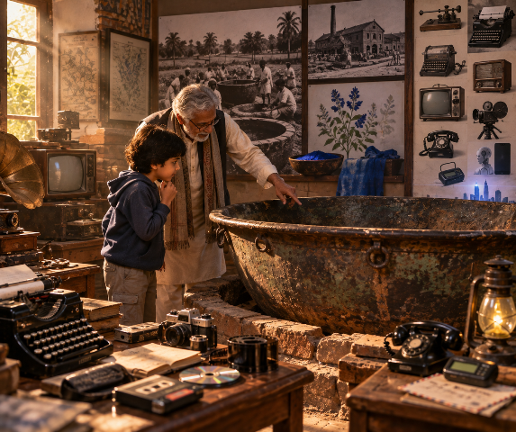

একটি ধারাবাহিক প্রবন্ধ
যে প্রযুক্তিগুলো একদিন আমাদের জীবন ছিল
নীলের কড়াই থেকে টাইপরাইটার, শর্টহ্যান্ড, সাইক্লোস্টাইল আর DTP — হারিয়ে যাওয়া প্রযুক্তি আর তার সঙ্গে জড়িয়ে থাকা মানুষের গল্প।
পর্বগুলো


নীলের কড়াই থেকে টাইপরাইটার, শর্টহ্যান্ড, সাইক্লোস্টাইল আর DTP — হারিয়ে যাওয়া প্রযুক্তি আর তার সঙ্গে জড়িয়ে থাকা মানুষের গল্প।